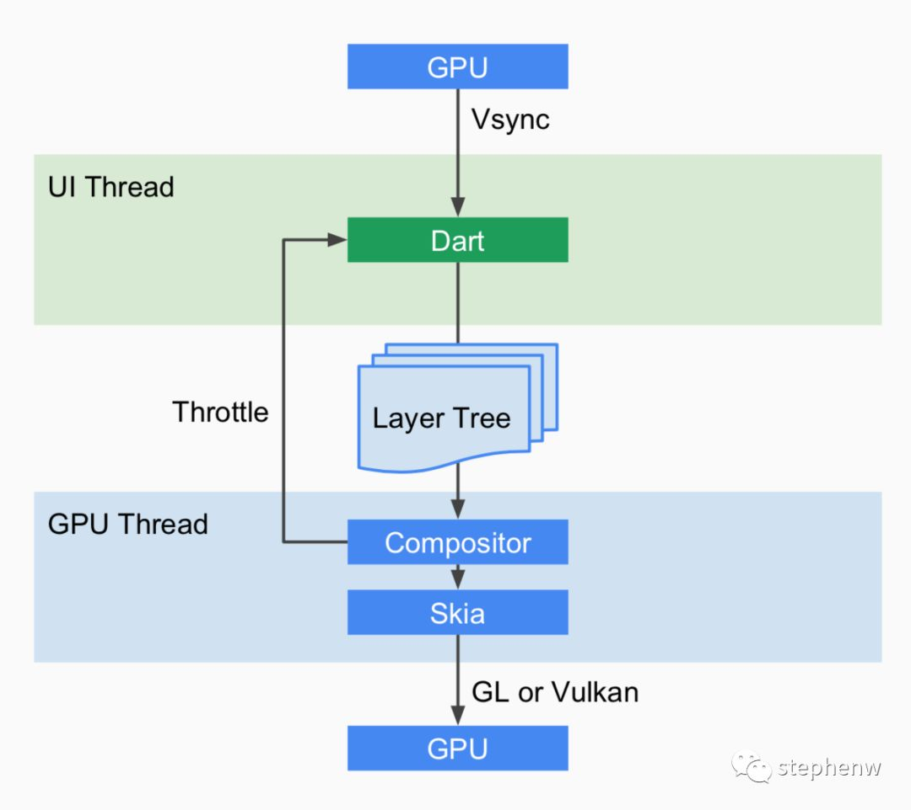
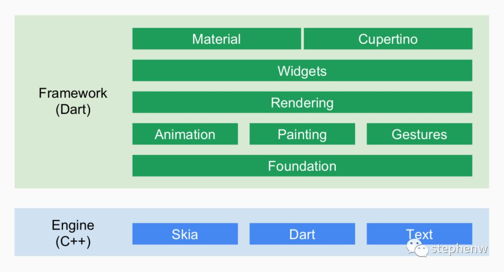
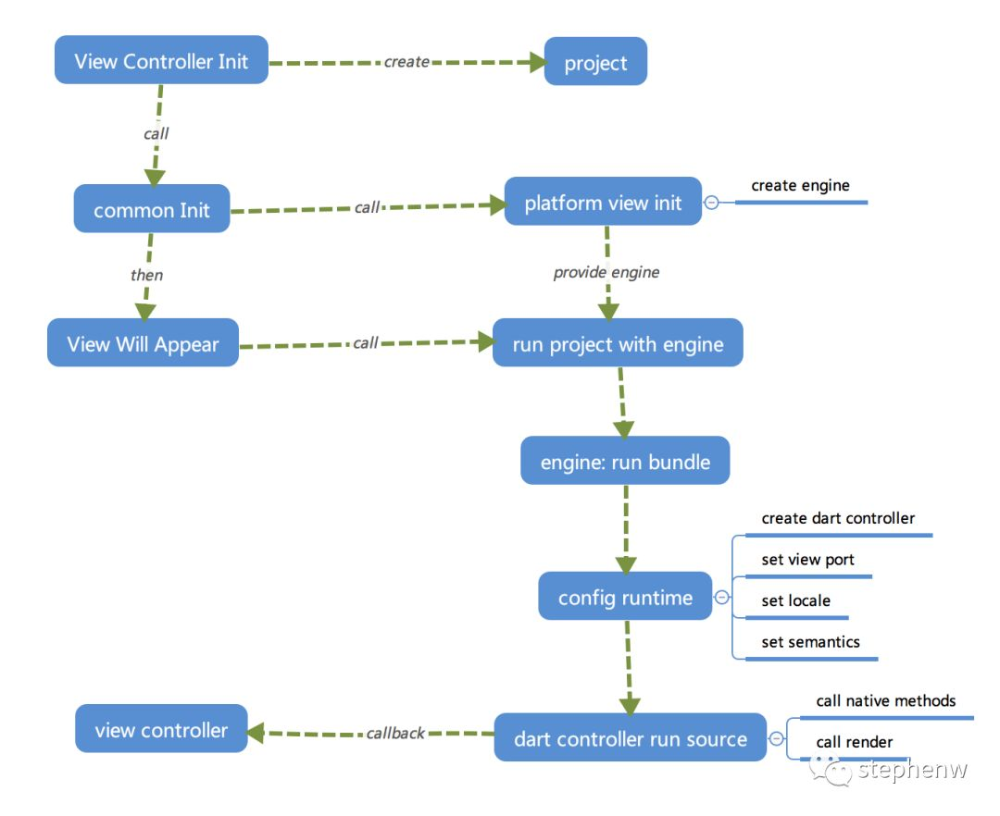
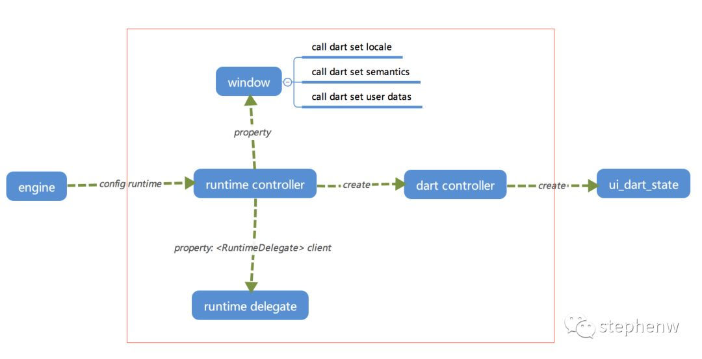
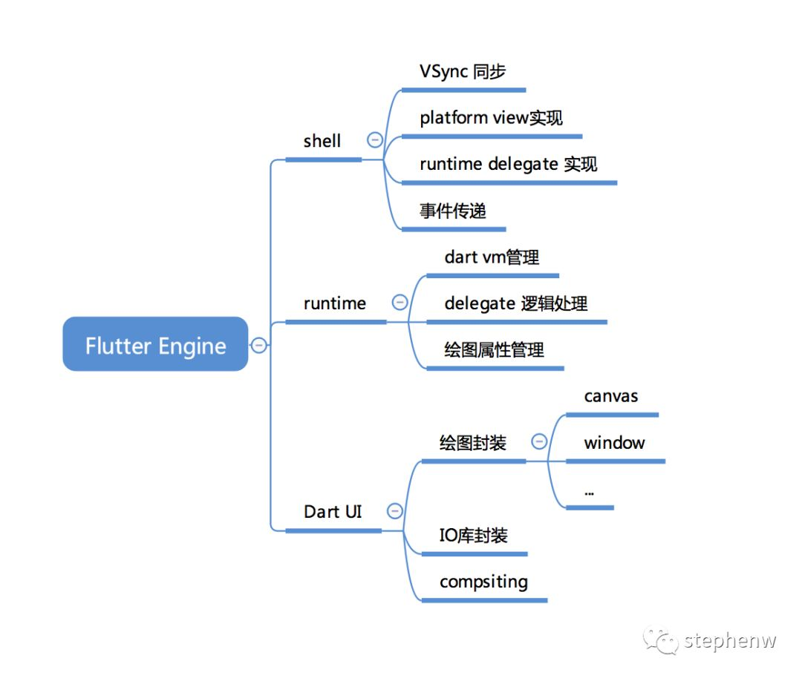

Flutter 原理简解
绘图基本原理
我们都知道显示器以固定的频率刷新，比如 iPhone的 60Hz、iPad Pro的 120Hz。当一帧图像绘制完毕后准备绘制下一帧时，显示器会发出一个垂直同步信号（VSync），所以 60Hz的屏幕就会一秒内发出 60次这样的信号。 并且一般地来说，计算机系统中，CPU、GPU和显示器以一种特定的方式协作：CPU将计算好的显示内容提交给 GPU，GPU渲染后放入帧缓冲区，然后视频控制器按照 VSync信号从帧缓冲区取帧数据传递给显示器显示。

Android、iOS的 App在显示 UI时是如此，Flutter也不例外，也遵循了这种模式。所以从这里可以看出 Flutter和 React-Native之众的本质区别：React-Native之类只是扩展调用 OEM组件，而 Flutter是自己渲染。

这张图解释得更清晰一些：Flutter只关心向 GPU提供视图数据，GPU的 VSync信号同步到 UI线程，UI线程使用 Dart来构建抽象的视图结构，这份数据结构在 GPU线程进行图层合成，视图数据提供给 Skia引擎渲染为 GPU数据，这些数据通过 OpenGL或者 Vulkan提供给 GPU。
所以 Flutter并不关心显示器、视频控制器以及 GPU具体工作，它只关心 GPU发出的 VSync信号，尽可能快地在两个 VSync信号之间计算并合成视图数据，并且把数据提供给 GPU。
Flutter的整个架构

Flutter Framework: 这是一个纯 Dart实现的 SDK，类似于 React在 JavaScript中的作用。它实现了一套基础库， 用于处理动画、绘图和手势。并且基于绘图封装了一套 UI组件库，然后根据 Material 和Cupertino两种视觉风格区分开来。这个纯 Dart实现的 SDK被封装为了一个叫作 dart:ui的 Dart库。我们在使用 Flutter写 App的时候，直接导入这个库即可使用组件等功能。
Flutter Engine: 这是一个纯 C++实现的 SDK，其中囊括了 Skia引擎、Dart运行时、文字排版引擎等。不过说白了，它就是 Dart的一个运行时，它可以以 JIT、JIT Snapshot 或者 AOT的模式运行 Dart代码。在代码调用 dart:ui库时，提供 dart:ui库中 Native Binding 实现。 不过别忘了，这个运行时还控制着 VSync信号的传递、GPU数据的填充等，并且还负责把客户端的事件传递到运行时中的代码。
Flutter应用的运行
要理解 Flutter的原理，我们从 entry point开始看 Flutter的代码。由于应用框架大同小异，所以下文提及 Flutter的代码即指代 Flutter Engine的代码，而非 Flutter Dart Framework代码。
下图是我简单整理了一下 Flutter应用启动后的执行顺序

在应用的 View Controller 初始化后，会实例化一个 Flutter project的抽象（以下简称 project）。project会初始化一个 platform view的抽象实例，这个抽象实例会负责创建 Flutter 的运行时（以下简称 engine）。
当 View Controller将要显示时，调用 project查找和组合 Flutter的应用资源 bundle，并且把资源提供给 engine。 engine在真正需要执行资源 bundle时才会创建 Dart执行的环境（懒加载，以下简称 Dart Controller），然后设置视图窗口的一些属性等东西（这是绘图引擎必需的）。 然后 engine中的 Dart Controller会加载 Dart代码并执行，执行的过程中会调用 dart:ui的 native binding实现向 GPU提供数据。
VSync信号的同步
要让视图动态化，仅仅能实现视图绘制还不行，还得知道硬件何时发送了 VSync信号，通过获取 VSync信号，计算并给 GPU提供数据来构建动态化的界面。不过每个平台的 VSync信号的获取方式不太一样，我们这里讨论一下 iOS上的实现，以此管中窥豹。
在 flutter/shell/platform/darwin/ios/framework/source/FlutterView.mm实现里面可以看到，在 UIView的 CALayer delegate中调用了 SnapshotContentsSync函数，这个函数会回调到 GPU线程，从 GPU线程执行获取 LayerTree，计算并合成位图，然后把位图信息传递给 Skia引擎，Skia引擎通过 CGContextRef把位图信息传递给 GPU。
- (void)drawLayer:(CALayer*)layer inContext:(CGContextRef)context {
SnapshotContentsSync(context, self);
}
1 // 回调到 GPU线程计算，并且这里用了一个 Dart future的 native版来同步等待 GPU线程执行结果
2void SnapshotContentsSync(CGContextRef context, UIView* view) {
3 auto gpu_thread = blink::Threads::Gpu();
4
5 if (!gpu_thread) {
6 return;
7 }
8
9 fxl::AutoResetWaitableEvent latch;
10 gpu_thread->PostTask([&latch, context, view]() {
11 SnapshotContents(context, [view isOpaque]);
12 latch.Signal();
13 });
14 latch.Wait();
15}
16
17// SnapshotContentsSync 内容太长不赘述，精简看一下：
18{
19 // 获取 LayerTree
20 flow::LayerTree* layer_tree = rasterizer->GetLastLayerTree();
21 if (layer_tree == nullptr) {
22 return;
23 }
24 // 获取可合成图层大小
25 auto size = layer_tree->frame_size();
26 if (size.isEmpty()) {
27 return;
28 }
29 SkCanvas canvas(bitmap);
30
31 {
32 // 合成图层
33 flow::CompositorContext compositor_context(nullptr);
34 auto frame = compositor_context.AcquireFrame(nullptr, &canvas, false /* instrumentation */);
35 layer_tree->Raster(frame, false /* ignore raster cache. */);
36 }
37
38 canvas.flush();
39
40 // Draw the bitmap to the system provided snapshotting context.
41 // 把位图使用 Skia传递给系统的 GPU缓冲区
42 SkCGDrawBitmap(context, bitmap, 0, 0);
43}
不过有一点不太确定的是，iOS的 Architecture中，并没有地方明确地提到 CALayerDelegate是与 Vsync同步的。不过可以确定的是，CALayerDelegate是并发多线程的，这个在 CATiled Layer那里可以得到体现，而 CALayer Delegate的数据确实提交给了 GPU缓冲区实现了屏幕图像的显示。
Flutter Engine的组成
在我的理解中，整个 Flutter Engine可以粗略地划分为三个部分：Dart UI、Runtime、Shell，我们一一道来。
1. Dart UI
Dart UI是一个 C++实现的 dart:ui库的 Native Binding，并且 UI Lib也是 Dart GUI程序的应用主要入口。 Dart UI向上层提供了 window、text、canvas、geometry等通用的绘图能力， Runtime在调用 Dart UI时，Dart UI根据传递的 main entrypoint 来执行并且向 window渲染图像。 值得一提的是，Dart UI还向上层提供了 compsiting的绘图能力，这其实就是一个 Skia的 Scene的封装，上层在调用 compsiting时其实就会生成或挂载节点到 LayerTree上。然后通过 LayerTree的数据结构辅助 Skia进行 Scene合成位图。
LayerTree是 flow库中的图层抽象类。flow 是 chrome项目中通用的绘图数据结构抽象库，可以适配到其他绘图引擎上。
2. Runtime
Flutter Engine的 Runtime可谓比较复杂，并不是代码多，而是使用了非常多的 Delegate模式，将平台相关的代码交由 Shell部分实现。
Runtime负责创建 Dart的运行时，并且在不同的开发阶段运行的环境也不一样。开发时期是保留 check mode的 Dart Snapshot VM，而生产环境是 Dart AOT Runtime。
Dart Snapshot VM 和 Dart JIT VM有着本质的区别。Dart Snapshot是指 token化的 Dart脚本，并非 human readable的。而 JIT VM 是直接以 script方式运行源代码。很明显 Snapshot VM要比 JIT VM稍微快一些。

上图，红框部分是在 Runtime部分执行的逻辑。engine的抽象处于 Shell层，而 ui_dart_state处于 Dart UI 层。 我们可以看到 Runtime会由 Shell层调用生成一个 runtime controller 实例，这个实例管理着当前的绘图窗口window的属性，一个 Dart的VM 的实例，以及一个 delegate，这个 delegate能打通 Shell层和 Dart UI层的通信，并且负责事件的传递。
3. Shell
这里说的 Shell其实就是 “壳”，这个壳就是组合 Runtime、第三方工具库、平台特性等，实现调用和执行 Flutter应用的逻辑。
1、Shell 封装了一个 engine的抽象，这个抽象能够调用 Runtime，实现 Runtime中的 Delegate，以此向 Runtime提供数据和回调。
2、Shell 还封装了 platform view的抽象，并且具体地实现了 platform view，在 iOS特定代码中的表现就是遵循 Delegate方法并提供了 UIView实例的管理。
3、Shell 提供了一些基础工具的封装，如 Future，可以实现 dart:io中的 Future相同的执行逻辑，并且还负责了处理 VSync信号，UI、GPU Thread的回调。
4、Shell 提供了从 engine获取 LayerTree的和调用渲染方法的封装。
总的来说，Dart UI给 Dart提供了调用 Native绘图的能力，Runtime为 Flutter提供了调用 Dart和 Dart UI的能力，而 Shell才是集大成者，Shell将他们组合起来，并且从他们生成的数据中实现渲染。

几个问题 Again
1. Flutter能动态更新吗？
原版不行。理论可行。动态下发意味着 Dart源代码需要以 JIT或 JIT Snapshot的方式运行，而 Flutter的 production build是 AOT代码，所以原版不行。但 Flutter的 debug build是 JIT Snapshot运行，可以动态更新。 那么，既要 production build，又要 JIT Snapshot执行，该如何做呢？ Flutter Engine SDK的 build option里面可以设置 mode = release， AOT = false，那么 打出来的 Engine SDK不会包含 Dart AOT Runtime。 并且需要注意 Flutter CLI TOOL的编译方式，需要以 Snapshot方式编译最终的 production代码。 值得一提的是，JIT Snapshot方式执行性能可能稍差，60fps可能会达不到。
2. Flutter SDK体积为什么非常大？
Flutter应用的体积由两部分组成：应用代码和 SDK代码。应用代码是 Dart编译后的代码，如果做成可动态下发，那么这部分可以不计。 SDK代码比较大就有点无奈了，SDK的组成部分有 Dart VM，Dart标准库，libwebp、libpng、libboringssl等第三方库，libskia，Dart UI库，然后再加上 icu_data，可能在单 arch下（iOS），SDK体积达到 40+MB。其中仅仅 Dart VM（不包含标准库）就达到了 7MB。 Flutter SDK是 dynamic framework，如此大的二进制体积可能会造成动态链接耗时长。而如果静态链接，可能原来比较大的 App很有可能造成 TEXT段超标。
3. Flutter可以跑多个实例吗？
理论上是可以的。虽然 Flutter Engine的 Shell层写死了只会跑一个 Flutter View（只会跑一个 Runtime），但这是可以改变的，而且只需要少量的逻辑改动。唯一需要担心的就是多个实例的内存消耗。
4. 去掉 Flutter的特性，只嵌入 Dart到应用中，可能吗？
可行。Dart毫无疑问是一门优秀的编程语言，我也曾尝试将 Dart独立出来作为一个通用的 SDK。Dart SDK托管在 chromium项目中，并且提供了 cross building的选项。原版即提供了 Android Build脚本。但在 iOS上原版行不通，猜测主要是标准库的问题。在 Flutter iOS项目中，Dart 标准库提供了一份完全不同的实现。而且，想要把 Dart VM和标准库从 Flutter剥离出来，太困难了。并且单个 arch下，Dart VM加标准库的体积是 > 10MB的。